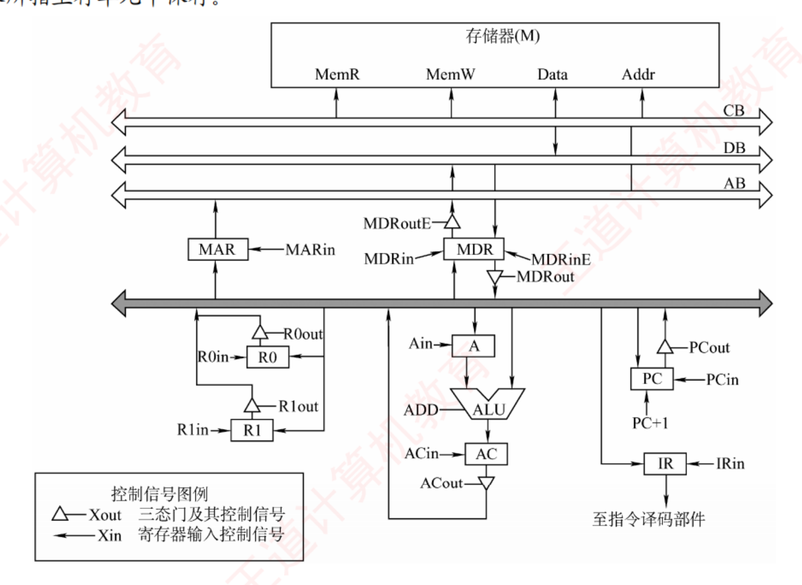
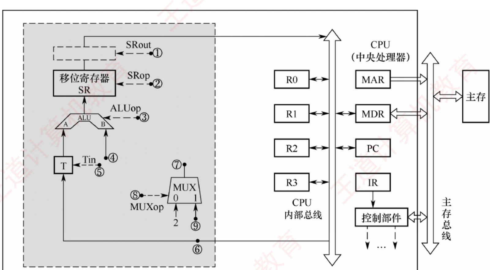

408
408先答旧题
函数第一个参数和第一个局部变量分别在哪？
[ebp+8]、[ebp−4]。call 和 ret 对栈做了什么？
RISC 的四个特点？
上一话是程序员看到的指令。这一话打开 CPU，看一条指令在里面怎么走。别背图，记住每一步其实就是把数据从一个寄存器送到另一个寄存器，图你可以自己画出来。
其之壹CPU 的组成
CPU 分两部分：
运算器：算。ALU、通用寄存器 GPR、程序状态字 PSW（放标志位）、暂存器。
控制器：指挥。程序计数器 PC、指令寄存器 IR、指令译码器、时序系统、微操作信号发生器（CU）。
和主存打交道的是 MAR（地址）和 MDR（数据）。
寄存器位数和可见性
PC 位数 = 主存地址位数。指令按字对齐时，低位恒 0，可少 log₂(字节数) 位。
MAR = 地址位数；MDR = 存储字长；IR = 指令字长。
程序员可见：PC、GPR（含基址、变址寄存器）、PSW（标志位）。不可见：MAR、MDR、IR、暂存器、微指令寄存器。
其之貳指令周期
时间单位有三层，大的包含小的：
- 时钟周期：最小单位，节拍。
- 机器周期（CPU 周期）：完成一个基本动作，比如读一次内存。
- 指令周期：执行一条指令的全部时间。不同指令的指令周期可以不同，空指令只要取指，而间址寻址的加法要更长。
一条指令的流程：
指令和数据都放在内存，都是二进制，CPU 怎么分？看现在处于哪个周期：取指周期取回的是指令，执行周期取回的是数据。
四个周期的微操作（默写）
取指：PC→MAR；MEM→MDR；MDR→IR；PC+1→PC（读命令由 CU 发）。
间址：Ad(IR)→MAR；MEM→MDR；MDR→Ad(IR)。
执行：看指令。
中断：SP−1→SP, SP→MAR；PC→MDR 写入内存；向量地址 →PC。
就算是空操作指令，也要取指，PC 也要加 1，寄存器内容是会变的。
合上页面说一遍：默写取指周期四步，并说明 CPU 怎样区分指令和数据。
PC→MAR；MEM→MDR；MDR→IR；PC+1→PC。靠当前处于指令周期的哪个阶段。
其之參数据通路
数据通路是指令执行时数据走的路。两种基本结构：
CPU 内部单总线：所有部件接一条内部总线，一个时钟周期只能走一个数。结构简单，但 ALU 要两个输入，所以要暂存器 Y 放一个操作数；输出没法马上上总线（一个周期总线只有一个源），所以要暂存器 Z 放结果。
专用通路：部件之间连专门的线，同一周期可以走多路数据。速度快，线多。多总线结构介于两者之间，三总线下 R1+R2→R3 一个周期就能做完。
走一遍单总线上的加法。指令 add R1, [R2]：把 R1 和内存 M[R2] 相加，放回 R1。
| 周期 | 微操作 | 控制信号 |
|---|---|---|
| 1 | PC→MAR | PCout，MARin |
| 2 | MEM→MDR，PC+1→PC | MemR，MDRin |
| 3 | MDR→IR | MDRout，IRin |
| 4 | R2→MAR | R2out，MARin |
| 5 | MEM→MDR | MemR，MDRin |
| 6 | MDR→Y | MDRout，Yin |
| 7 | R1+Y→Z | R1out，ALU 加，Zin |
| 8 | Z→R1 | Zout，R1in |
前 3 步是取指，4–5 步取操作数，6–8 步做加法并写回。控制信号就是控制器在每个周期发出的那组开关。写的时候只要保证：每个周期总线上只有一个源。
内总线一个周期只能有一个源
要判断两件事能否同周期做，就看它们是否都要用同一条总线。PC+1→PC 单总线下要经过 Z，走单独的周期，除非 PC 自带自增电路。
单周期、多周期：单周期处理器每条指令一个时钟周期（CPI=1），时钟按最慢的指令定；一个周期内要做完所有事，所以不能用单总线。多周期处理器把指令分成几个周期，部件可以复用。
其之肆控制器
控制器把指令翻译成控制信号。输入是 IR 的操作码、节拍、PSW 标志、外部信号；输出就是上表第三列。两种做法：
硬布线和微程序
硬布线：背下来的条件反射，快但改不了。微程序：查手册。把每条指令拆成一串微指令，存在控制存储器里。慢一点，改手册就行。
| 硬布线 | 微程序 | |
|---|---|---|
| 实现 | 组合逻辑电路 | 控存（ROM）中存微指令 |
| 速度 | 快 | 慢（要读控存） |
| 扩展 | 难 | 容易 |
| 适用 | RISC | CISC |
谁能被直接执行：CPU 硬件只认机器指令，微程序控制器内部再执行微指令。汇编指令要汇编器翻译；伪指令是一串指令的简写，由汇编器展开。
层次：一条机器指令对应一段微程序，一段微程序是若干微指令，一条微指令是一个周期内发出的一组微命令，微命令对应一个微操作。控存（CS） 用 ROM 做，在 CPU 内部，按地址访问。
微指令的编码
直接编码：一位对应一个命令，最长最快。
字段直接编码：互斥的命令放一个字段。一个字段 m 个命令需要 ⌈log₂(m+1)⌉ 位，+1 是留给「什么都不做」。
下地址字段：位数 = ⌈log₂ 微指令总数⌉。
算一遍：三组互斥命令，分别 3、7、15 个，字段直接编码。分别要 2、3、4 位，共 9 位。而直接编码要 25 位。注意 3+1 = 4 恰好 2 位。
微指令总数：所有指令共用同一段取指微程序，只算一份。
水平型和垂直型微指令
水平型：一条微指令能并行发出多个微命令。长、快、并行能力强，用户编写难。
垂直型：类似机器指令，一条只做一个动作，要译码。短、慢、易编。
合上页面说一遍：字段直接编码每个字段几位？为什么要 +1？水平型和垂直型差在哪？
⌈log₂(m+1)⌉。留一个编码表示不发命令。水平型并行、长、快；垂直型一条一动作、短、慢。
领域展开
指令周期：取指 → 间址 → 执行 → 中断。
取指微操作：PC→MAR，MEM→MDR，MDR→IR，PC+1→PC。
单总线：一个周期一个源，所以要 Y、Z。
控制：硬布线快，微程序易改；字段位数 ⌈log₂(m+1)⌉。
其之伍实战
再深一层
🐍 复算（Python 独立验算，与书答零误差）：
【PC】主存 4GB = 2^32 B
指令字长 32 位 = 4 B = 2^2 B
可存指令条数 = 2^32 / 2^2 = 2^30 条
PC 位数 = log2(2^30) = 30 位 ✓
【IR】IR 位数 = 指令字长 = 32 位 ✓
⟹ (30, 32) ⟹ B📌 本题的胜负手是「至少」＋「按字边界对齐」这两个词同时出现。缺任何一个，答案都变成 D（32，32）：· 没有「按字边界对齐」⟹ 指令可以起始于任意字节 ⟹ 必须用 32 位字节地址；
· 没有「至少」⟹ 直接用 32 位字节地址也能工作，只是浪费了 2 位。
⟹ 「至少 + 对齐」是命题人给的许可，允许你把地址粒度从字节粗化到字，省下 log₂4 = 2 位。
⚠️ 省掉的 2 位去哪了？答案在书答那句「取指令时将 PC 值左移 2 位」：
PC（30 位字地址） = 0000...0101 = 第 5 条指令 左移 2 位补零 = 0000...010100 = 字节地址 20 ⟹ 送 MAR（32 位）去访存 之所以能补零而不丢信息：对齐保证了字节地址的低 2 位【恒为 0】。 若不对齐，低 2 位可能是 01/10/11，补零就取错指令了。⚠️ C 项（32，30）是给「两问对调」的人准备的——把「4GB 主存」错配给 IR、把「32 位指令」错配给 PC。记牢配对关系：主存容量 → PC，指令字长 → IR。IR 从头到尾与主存有多大无关。
🔗 与 ch4 的对照：ch4 讲扩展操作码时强调「按字节编址时指令字长要向上取到 8 的倍数」，本题是同一族的「对齐红利」：对齐既是约束也是优化——约束了指令的摆放位置，换来了地址位数的节省。
再深一层
📌 用户可见 / 不可见名单（考前默背这一张）：
【可见 · 可读可写】通用寄存器组 GPRs
专用地址寄存器（基址 / 变址 / 堆栈指针 SP）
程序计数器 PC ← 本题答案
【可见 · 只读】 标志寄存器 FR / PSW ← 半透明（5.1-06/17）
【不可见 · 完全透明】IR · MAR · MDR · 页表基址寄存器
判据（书上原话）：「根据汇编语言程序是否能够直接访问」来分。📌 PC 的「可见」是间接的可见，这一点必须想通：你不能写 MOV PC, 1000H（5.1-11 A 项：机器指令中不能显式使用 PC），但你写 JMP 1000H 就是在给 PC 赋值。⟹ 王道对「可见」的判据是「程序员能否控制它的值」，而不是「能否编号访问它」。这个区分是本题和 5.1-11 之间唯一的缝，命题人两边都考过。
⚠️ A/C/D 三项为什么必然不可见——一句话理由：它们是「取指与访存的工作台」，程序员碰了机器就乱了。
· MAR / MDR：每次访存都在被硬件覆写，程序员写进去的值活不过半拍；
· IR：正装着当前指令，改它等于在执行途中换掉自己 ⟹ 行为无定义。
🔗 2010 之后这个考点又出现过两次（2015、2021，见书上考点追踪），是 5.1 节最高频的考点，性价比极高——一张名单管三年真题。
再深一层
A 为什么错？——【因果倒置】，顺着推一遍就崩： A 说：靠译码结果区分 ⟹ 得先译码 但：译码的对象是【操作码】 而：只有【指令】才有操作码，数据没有 ⟹ 要译码就得先知道「这是指令」 ⟹ 但那正是我们要判断的事 ⟹ 循环论证 ✗ C 为什么对？——靠【时间】而不是靠【内容】： 取指阶段访存取回来的 ⟹ 一律当【指令】，送 IR 执行阶段访存取回来的 ⟹ 一律当【数据】，送 ALU/GPRs ⟹ CPU 根本不「看」那串 0/1 是什么，它看的是【自己现在处于哪个周期】📌 王道的经典表述是「从时间和空间两方面区分」，本题考的是时间这一半：
| 维度 | 怎么区分 | 本题 |
|---|---|---|
| 时间 | 取指周期取的是指令，执行周期取的是数据 | ✓ 答案 C |
| 空间 | 从内存取的可能是指令也可能是数据；从取指部件送到的一定是指令，送到运算器的一定是数据 | D 想说这个但说歪了 |
⟹ 若真能靠存储位置区分，那就是哈佛结构（指令存储器与数据存储器物理分开），不是冯·诺依曼机了。
🔗 这里正是本章最重要的一条跨节串联：
· 哈佛结构 ⟹ ch3 的指令 Cache / 数据 Cache 分离；
· 而 Cache 分离的直接动因，是 5.6 流水线的结构冒险——IF 段要取指、MEM 段要取数，若共用一个存储器就会打架；
· ⟹ 现代 CPU 是「外部冯·诺依曼（主存统一）+ 内部哈佛（L1 Cache 分离）」的混合体。这道 2009 年的概念题，答案的另一面就是 5.6 节结构冒险的解法。
再深一层
nop（空操作）的指令周期，逐步看谁被改了：
取指周期：(PC) → MAR ← 【MAR 被改】
M(MAR) → MDR ← 【MDR 被改】
(MDR) → IR ← 【IR 被改】
PC ← PC + 1 ← 【PC 被改】★ 这条最致命
执行周期：（什么也不做）
⟹ 至少 4 个寄存器的内容变了 ⟹ C 的「任何寄存器都不会被改变」错
书答只点了 PC 这一个，因为它最无可辩驳（无论如何都躲不掉）📌 nop 的真实用途恰恰要靠「它确实消耗了一个指令周期」：· 流水线插「气泡」：5.6 节解决数据冒险的软件办法就是插入若干条 nop，靠它拖时间等结果写回；
· 延迟槽填充：分支延迟槽没东西可填时填 nop；
· 代码对齐：让后续指令落到 Cache 行边界。
⟹ 如果 nop 真的「什么都不改」，它就无法拖时间，上面三个用途全部失效。「空操作」空的是执行阶段，不是整个指令周期。
⚠️ A 项的两个前提是命题人精心给的，缺一不可：
· 不采用 Cache ⟹ 取指必须真的去访问主存（有 Cache 就可能命中而不访主存）；
· 不采用指令预取 ⟹ 每条指令都要现取（有预取则可能已在指令队列里）。
⟹ 「至少一次」的那一次就是取指。加上取操作数、写结果，可能更多，所以说「至少」。
⚠️ D 项承接 5.2-06 的 D：中断只在指令边界响应（图 5.2 的中断阶段），而「开中断」保证了 PSW 的 IF 位为 1（5.1-15），两个条件都满足 ⟹ 每条指令结束时都可能被打断，D 正确。注意 D 说的是「可能」不是「一定」——有请求才打断。
🔗 本题把 5.1（寄存器 / PSW）与 5.2（指令周期 / 中断时机）串在一条题里考，是这两节的最佳收尾题，也是 5.5 节的预告。
再深一层
为什么水火不容？——两个「一」直接打架：
单周期的要求：一条指令的【全部操作】在一拍内做完
单总线的限制：一拍内只允许【一次】数据传输
拿一条最简单的 add R1,R2 数数看，它至少要传几次：
① (PC) → MAR 取指的地址
② M(MAR) → MDR 取回指令
③ (MDR) → IR 送译码
④ (R1) → Y 第一个操作数
⑤ (R2) → ALU，结果 → Z
⑥ (Z) → R1 写回
⟹ 至少 6 次总线传输，单总线要 6 拍
⟹ 一拍根本不够 ⟹ 单周期 + 单总线 = 做不到 ✗📌 反过来说，单周期只能用专用数据通路（图 5.11 那张完整单周期图就是纯专用连线）——指令存储器、数据存储器、寄存器堆、三个加法器各走各的专线，才可能在一拍内并行完成。⟹ 「单周期 ⟺ 专用通路」「单总线 ⟺ 多周期」是配对出现的，记成两组就不会错。⚠️ B 项「时钟频率较低」的因果要顺过来：
CPI = 1（一拍装下整条指令）
⟹ 这一拍必须够长，装得下【最慢】的那条指令
⟹ 时钟周期长
⟹ 主频 = 1/时钟周期 低 ← B 正确
⚠️ 「CPI = 1」和「频率低」不是矛盾，是【同一个设计的一体两面】：
拿频率换 CPI，总时间没占到便宜（见 5.3-11 的 B 项）。⚠️ C 项「控制信号不变」承接 5.3-10 的 C：一拍内操作码恒定 ⟹ 组合逻辑译出的控制信号恒定。而多周期的控制器是状态机，每拍换一组信号——这是两者控制器实现方式的根本分野，也是 5.4 节硬布线 vs 微程序的伏笔。再深一层
📌 书答的三段式论证特别值得抄下来，它把三种处理器一网打尽：
| 处理器 | 多久开始一条新指令 | D 成立吗 |
|---|---|---|
| 单周期 CPU | 每个时钟周期（＝一个指令周期） | ✓ 唯一成立的情形 |
| 多周期 CPU | 每个指令周期（含若干时钟周期） | ✗ 好几拍才一条 |
| 流水线 CPU | 理想情况下每个时钟周期 | ✗ 「理想」二字就是漏洞 |
流水线打不到「每拍一条」的三种情形（5.6 节的三大冒险）：
结构冒险：两条指令抢同一个部件 ⟹ 停顿
数据冒险：后一条要用前一条还没写回的结果 ⟹ 停顿或转发
控制冒险：分支指令的目标还没算出来 ⟹ 流水线排空
再加上填充和排空的开销 ⟹ 实际 CPI 总是【略大于 1】
⟹ 5.6 节的加速比公式里那个「理想 CPI = 1」，
「理想」是个必须念出来的定语，不是客套话。📌 A 项顺带把时钟的产生链记牢（5.2.2 节原文）：晶振（脉冲源）→ 整形 → 分频 → 节拍信号，供全机同步使用。「分频」意味着 CPU 主频通常低于晶振原始频率的整数倍关系，这也是超频/降频的物理基础。📌 C 项是本节最该背的公式性表述：「以相邻状态单元间组合逻辑电路的最大延迟为基准」——注意是「最大」不是「平均」，因为时钟一刀切，木桶效应（详见 5.3-07 的分析）。🔗 这条在 5.6 会变成「流水线的时钟周期由最长的流水段决定（还要加上段寄存器延时）」，2018 真题的 80 + 20 = 100ps 算的就是它。同一条物理约束，两节各考一次。
下表给出了上述指令取指和译码阶段每个节拍（时钟周期）的功能和有效控制信号，请按表中描述方式用表格列出指令执行阶段每个节拍的功能和有效控制信号。
| 时钟 | 功能 | 有效控制信号 |
|---|---|---|
| C1 | MAR ← (PC) | PCout, MARin |
| C2 | MDR ← M(MAR) / PC ← (PC) + 1 | MemR, MDRinE / PC + 1 |
| C3 | IR ← (MDR) | MDRout, IRin |
| C4 | 指令译码 | 无 |

| 时钟 | 功能 | 有效控制信号 |
|---|---|---|
| C5 | MAR ← (R1) | R1out, MARin |
| C6 | MDR ← M(MAR) | MemR, MDRinE |
| C7 | A ← (MDR) | MDRout, Ain |
| C8 | AC ← (A) + (R0) | R0out, ADD, ACin |
| C9 | MDR ← (AC) | ACout, MDRin |
| C10 | M(MAR) ← (MDR) | MDRoutE, MemW |
| 时钟 | 功能 | 有效控制信号 |
|---|---|---|
| C5 | MAR ← (R1) | R1out, MARin |
| C6 | MDR ← M(MAR)，A ← (R0) | MemR, MDRinE, R0out, Ain |
| C7 | AC ← (MDR) + (A) | MDRout, ADD, ACin |
| C8 | MDR ← (AC) | ACout, MDRin |
| C9 | M(MAR) ← (MDR) | MDRoutE, MemW |
再深一层
📐 解题四步（书答原话：「以取指阶段的示例为突破口」）：
① 读懂示例：C1–C4 已经示范了「访存必须先送 MAR、
数据必须经 MDR」这两条铁律
② 拆解指令功能：(R0) + ((R1)) → (R1)
一个操作数在寄存器、一个在主存、结果回主存
③ 排节拍：每个「经总线的传送」占一拍
④ 配信号：数据流出 X 写 Xout，流入 X 写 Xin📌 C7 那一步「A ← (MDR)」是全题最容易漏的一拍，理由就是 5.3-04 那条铁律：ALU 的一个输入端接的是寄存器 A（图上 Ain 那个），另一个输入端接内部总线。⟹ 两个操作数必须有一个先存进 A，另一个才能在下一拍经总线直送 ALU。直接写
AC ← (MDR) + (R0) 是错的——MDR 和 R0 都要走总线，一拍上不去两个（一发多收，5.3-06）。⚠️ ⭐ 「答案不唯一」的那个优化解是本题最有价值的部分，务必理解它为什么合法：
C6 一拍里同时做两件事：
MDR ← M(MAR) 走【外部数据总线 DB】：MemR + MDRinE
A ← (R0) 走【CPU 内部总线】 ：R0out + Ain
为什么不冲突？两条总线是【物理上分开】的：
DB 上的发送方是主存 （只有一个）✓
内部总线的发送方是 R0 （只有一个）✓
⟹ 各自满足「一发多收」，互不干扰 ⟹ 合法，省下 1 拍
⚠️ 反例：若把 C6 写成 MDR ← M(MAR) 且 A ← (MDR)，就非法——
MDR 这一拍还没拿到数据，读出来是旧值（时序上不成立）。⟹ 判断能否合并成一拍，看两条：① 是不是同一条总线？② 有没有数据依赖（后者要用前者这一拍的结果）？两条都过才能并。这是所有微操作序列题的通用压缩技巧。📌 C9–C10 写回主存的两拍不能合并：
MDR ← (AC) 用的是内部总线，M(MAR) ← (MDR) 用的是外部 DB，看似不同总线可以并——但后者要用的正是前者刚写进 MDR 的值，存在数据依赖，必须分两拍。⟹ 这就是上面第 ② 条判据的正面应用，也是与 C6 情形的关键区别。⚠️ C10 用
MDRoutE 不是 MDRout——往主存写要走外部数据总线（带 E），承综 03 的四信号辨析。这一个字母就是一个采分点。Ⅰ. 通用寄存器组（GPRs） Ⅱ. 算术逻辑单元（ALU） Ⅲ. 存储器（Memory） Ⅳ. 指令译码器（ID）
再深一层
把指令周期切成段，看每段用到谁：
【取指】(PC)→MAR，读主存，(MDR)→IR ← 题目【不问】
【译码】OP(IR) → 指令译码器 ID → 控制信号 ← 题目【不问】← Ⅳ 在这里
┌────────────── 题目问的范围从这里开始 ──────────────┐
【取数】R[r1] → 读 GPRs ← Ⅰ ✔
R[r0] 是地址 → 读 GPRs 得地址 → 访存 M[…] ← Ⅰ✔ Ⅲ✔
【执行】两数相加 → ALU ← Ⅱ ✔
【写回】结果 → R[r2]（GPRs） ← Ⅰ ✔
└───────────────────────────────────────────────────┘📌 把两个源操作数的寻址方式逐个落地，是本题的关键动作：· R[r1] 是寄存器寻址 ⟹ 操作数就在寄存器里，读 GPRs 一次即可，不访存；
· M[R[r0]] 是寄存器间接寻址 ⟹ r0 里装的是地址，要先读 GPRs 拿到地址，再拿它去访存。⟹ 同样是「读 GPRs」，两次读出来的东西性质完全不同：一个是数据，一个是地址。（这正是 5.3-综01 里
(R2) → MAR 那一行的含义。）⚠️ Ⅳ 指令译码器是唯一的排除项，理由必须说准：不是「这条指令用不到译码」（当然要译码），而是译码发生在取数之前，不在题目划定的阶段内。⟹ 若题干改成「该指令在执行全过程中」，答案就变成 Ⅰ、Ⅱ、Ⅲ、Ⅳ 全选。一句话之差，答案全变。
🔗 本题也在悄悄考「哪些部件属于数据通路」（5.3-17 的 2021 真题正面考过）：GPRs、ALU、存储器都在数据通路上（数据从它们身上流过）；指令译码器属于控制器，发的是命令不是数据，永远不在数据通路里。两道题从两个方向确认同一条边界。
1）图中哪些寄存器是程序员可见的？为何要设置暂存器 T？
2）控制信号 ALUop 和 SRop 的位数至少各是多少？
3）控制信号 SRout 所控制部件的名称或作用是什么？
4）端点①～⑨中，哪些端点须连接到控制部件的输出端？
5）为完善单总线数据通路，需要在端点①～⑨中相应的端点之间添加必要的连线。写出连线的起点和终点。
6）为什么二路选择器 MUX 的一个输入端是 2？

2）ALU 共有 7 种操作，其操作控制信号 ALUop 至少需要 3 位（⌈log₂7⌉ = 3）；移位寄存器有 3 种操作，其操作控制信号 SRop 至少需要 2 位（⌈log₂3⌉ = 2）。
3）信号 SRout 所控制的部件是一个三态门，用于控制移位器与总线之间数据通路的连接与断开。
4）端点 ①、②、③、⑤、⑧ 须连接到控制部件输出端。
5）连线 1：⑥ → ⑨；连线 2：⑦ → ④。
6）因为每条指令的长度为 16 位，按字节编址，所以每条指令占用 2 个内存单元，顺序执行时下条指令地址为 (PC)+2。MUX 的一个输入端是 2，可便于执行 (PC)+2 操作。
再深一层
【第 1 问】程序员可见 = R0～R3 + PC——直接套 5.1-22（2010 真题）那份名单：可见 = 通用寄存器 + 专用地址寄存器 + PC；不可见 = IR、MAR、MDR、暂存器 T。T 之所以不可见，因为它是硬件为了绕开单总线限制而设的中转站，指令里根本没法提到它。
为什么必须有 T？（书答原话，与 5.3-04 完全一致）
单总线一拍只传一个数
⟹ 若 ALU 的 A、B 两端都直接挂总线
⟹ 它俩会同时拿到【同一个】数据 ⟹ 只能算 a+a ✗
⟹ 必须先把一个数存进 T，下一拍再送另一个【第 2 问】位宽速算，本节的固定套路： 🐍 复算（与书答零误差）：
ALU 7 种操作 ⟹ ⌈log2(7)⌉ = ⌈2.807⌉ = 3 位 ✓
SR 3 种操作 ⟹ ⌈log2(3)⌉ = ⌈1.585⌉ = 2 位 ✓
⚠️ 一定要向【上】取整：3 位能编 8 种 ≥ 7 ✓；2 位只能编 4 种 < 7 ✗
⚠️ 「至少」= 恰好够用的最小位数，别写成 8 位或 3 位（SR）【第 3 问】SRout 控制三态门——见 5.3-05。凡是图上标 Xout 的地方画的小三角就是三态门。【第 4 问】哪些端点接控制部件输出端？判据：它是控制信号吗？
| 端点 | 是什么 | 接 CU 输出？ |
|---|---|---|
| ① SRout | 三态门使能 | ✓ 是控制信号 |
| ② SRop | 移位器操作选择 | ✓ |
| ③ ALUop | ALU 操作选择 | ✓ |
| ④ | T 的数据输入端 | ✗ 走的是数据 |
| ⑤ Tin | T 的写使能 | ✓ |
| ⑥ | 总线上的数据抽头 | ✗ |
| ⑦ | MUX 的数据输出 | ✗ |
| ⑧ MUXop | MUX 通道选择 | ✓ |
| ⑨ | MUX 的数据输入端 | ✗ |
【第 5 问】补两条连线：⑥ → ⑨ 和 ⑦ → ④——这一问要从「PC+2 怎么走通」倒推：
目标：实现 (PC) + 2 → PC，路径必须闭环
⑥（总线上的 PC 值）──→ ⑨（MUX 的一个数据输入） 【连线 1】
MUX 另一个输入端是常数 2
⑦（MUX 输出）────────→ ④（T 的输入） 【连线 2】
T 存住一个操作数 → 送 ALU 的 A 端
ALU 做 add，另一端取常数 2 或总线值
→ SR 直送(mov) → SRout 上总线 → 写回 PC ✓⟹ 连线题的解法：先找出这条数据通路要完成的那个具体操作（这里是 PC+2），再看断在哪。【第 6 问】MUX 的常数输入端为什么是 2？——本题最考「联动」的一问：
按【字节】编址 ⟹ 一个地址 = 1 字节
指令 16 位定长 ⟹ 一条指令 = 2 字节 = 占 2 个编址单位
⟹ 顺序执行时 PC ← (PC) + 2
⟹ 硬件上就要有个常数 2 可选 ⟹ MUX 的一端固定接 2 ✓
⚠️ 若改成按【字】编址（一个地址 = 16 位 = 一条指令），
那就是 PC+1，MUX 那一端该接 1。
⚠️ 若指令 32 位、按字节编址，就是 PC+4（MIPS 的情形）。🔗 这正是 ch4「PC 增量 = 指令长度 ÷ 编址单位」那条铁律的硬件现场，也是 5.1-11 B 项（「PC 总是自动加 1」错）的实证——这里就加 2，不加 1。再深一层
| 互斥类 | 微命令数 n | 需表示的状态数 n+1 （含「本字段无操作」） | 位数 ⌈log₂(n+1)⌉ |
|---|---|---|---|
| 第 1 类 | 7 | 8 | 3 |
| 第 2 类 | 3 | 4 | 2 |
| 第 3 类 | 12 | 13 | 4 |
| 第 4 类 | 5 | 6 | 3 |
| 第 5 类 | 6 | 7 | 3 |
| 操作控制字段合计 | 15 位 | ||
🐍 把「+1」拿掉再算一遍：
⌈log₂7⌉=3 ⌈log₂3⌉=2 ⌈log₂12⌉=4 ⌈log₂5⌉=3 ⌈log₂6⌉=3
合计也是 15 位 —— 与含「+1」的结果【完全相同】！
⟹ 2012 这道真题【区分不出】你有没有掌握「+1」规则，
因为 7、3、12、5、6 全都不是 2 的整数幂，
加不加 1 都不会跨过 log₂ 的台阶。📌 ⟹ 千万别因为这题做对就以为自己会了「+1」。真正能区分的是综 04：它的 5 组是 5、8、2、15、22，其中 8 和 2 恰好是 2 的幂——忘掉「+1」会算成 3+3+1+4+5 = 16 位，正确答案是 3+4+2+4+5 = 18 位，直接差 2 位。⟹ 判断口诀：组内微命令数恰好是 2 的整数幂时，「+1」才会咬人。⚠️ D 项 33 位是「按直接编码算」的结果（每个微命令一位），正是本题要你避开的那条路——字段直接编码把 33 位压到 15 位，压缩比 55%，这就是它存在的理由（对照 04 题的三大设计目标）。
⚠️ A 项 5 位是「5 个互斥类」的数字，B 项 6 位是随手凑的——凡把题干里的某个数原样搬进选项的，基本都是陷阱。
📌 最后提醒：本题只问操作控制字段，没问整条微指令字长。完整的微指令还要加上判别测试字段和后继地址字段（综 03、综 04 才是完整版）。
再深一层
🐍 复算：
各指令自己的微指令：32 × 4 = 128 条
公共取指微程序： 2 条 ← 与那 128 条【不重叠】
─────────────────────────────────────
控存里的微指令总数： 130 条
后继地址字段必须能寻址全部 130 条：
2⁷ = 128 ＜ 130 ✘ 7 位不够（差这 2 条！）
2⁸ = 256 ≥ 130 ✔ 取 8 位📌 ⚠️ 命题人的用心：如果没有那「+2」，128 条恰好 = 2⁷，答案就是 7 位；正因为多了 2 条公共微指令，才被顶到 8 位。⟹ 漏算公共微程序的人，会稳稳地答成 7 位——而选项里没有 7，于是他会改选 A(5) 或 B(6)，一路错到底。选项设计本身就在筛人。⚠️⚠️ 本题与综 02 的加减方向正好相反，这是 5.4 最狠的一处审题分水岭：
| 本题（2014 真题） | 综 02 | |
|---|---|---|
| 题干原话 | 「各指令对应的微程序平均由 4 条微指令组成」 ＋另说「公共取指微程序包含 2 条」 | 「平均每条指令由 4 条微指令组成（包含取指微指令）」 ＋「其中有一条取指微指令是所有指令公用的」 |
| 那个 4 里含不含公共部分 | 不含 | 含 |
| 算法 | 32×4 + 2 = 130 | (4−1)×80 + 1 = 241 |
⚠️ 另一处不能省的确认：题目问的是后继地址字段位数（断定方式才有这个字段）。若改成增量方式，就没有这个字段可问了（19 题的对照表）。而后继地址字段位数 = ⌈log₂(控存单元数)⌉ = μPC 的位数——三者是同一个数，可互相反推（20 题就是反着给 μPC 位数）。
再深一层
四宫格里为什么只有一格成立：
易修改扩展 难修改扩展
速度快 （不存在） 硬布线 ✔ ← 本题答案 D
速度慢 微程序 ✔ （不存在）
⟹ 「快 + 好改」不存在，因为快来自【把逻辑焊死在电路里】，
焊死本身就意味着改不动 —— 这是一枚硬币的两面，不是两件事。📌 把因果链推一遍，比背对照表牢：硬布线 = 组合逻辑电路即时产生 ⟹ 只有门延迟 ⟹ 快；而逻辑一旦化简布线完成，加一条指令就要重新设计化简整块电路 ⟹ 难改。
微程序 = 从控存读出来 ⟹ 每条微指令一次存储器读 ⟹ 慢；而改指令只要改写控存里的微程序 ⟹ 易改。
⚠️ 表 5.2 的五行全部由这一条根因派生：工作原理（读出来 vs 即时产生）→ 速度（慢/快）→ 规整性（规整/烦琐）→ 易扩充性（易/难）→ 应用场合（CISC/RISC）。⟹ 记住第一行，其余四行现推。
🔗 09 题是本题的「应用版」（给场景选控制器），05 题是本题的「归因版」（问慢在哪一步）——同一个知识点，本节从三个方向各考了一遍，说明它是必拿分。
再深一层
| 对比项 | 主存储器 MM | 控制存储器 CS/CM |
|---|---|---|
| 位置 | CPU 外 | CPU 内（控制器里） |
| 存什么 | 指令 + 数据 | 微指令（微程序） |
| 器件 | RAM + ROM（主要是 RAM） | ROM |
| 访问方式 | 按地址 | 按地址（微地址） ⚠️ 不是按内容 |
| 地址寄存器 | MAR | μPC（CMAR） |
| 数据寄存器 | MDR | μIR（CMDR） |
| 谁写进去 | OS 装载程序 | 体系结构设计者，出厂固化 |
⚠️ 408 里真正「按内容访问」的只有两处，务必记牢，别张冠李戴：
① 全相联 / 组相联 Cache 的【标记比较】—— 相联存储器 CAM（ch3）
② 快表 TLB —— 也是相联存储器（ch3、OS 请求分页）
⟹ 共同点：不知道东西在第几号单元，只能拿 key 去【并行比对全部标记】。
而 CS 永远知道自己要读第几号单元 ⟹ 没有按内容访问的必要。⚠️ D 项容易被误判为错：「MM 用 RAM 和 ROM 实现」——主存里确实有一小块 ROM（存 BIOS/引导程序），这是 ch3 明确讲过的，所以 D 正确。看到「主存有 ROM」不要急着判错。做完再翻：这些题到底在问什么
位数题：PC 按地址算，按字对齐时可少低几位；IR 等于指令字长。 程序员可见：PC、通用寄存器、PSW 可见；MAR、MDR、IR 不可见。 数据通路大题固定一个写法：一行一个时钟周期，每行写 源→目的 和控制信号。先看清图上哪些部件接在总线上，哪些有暂存器。 微指令题：字段位数要记得 +1；下地址位数看微指令总数，公共取指微程序只算一份。